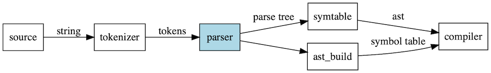

Parse Tree

G
file_input
file_input
stmt
stmt
file_input->stmt
T_ENDMARKER
T_ENDMARKER
file_input->T_ENDMARKER
compound_stmt
compound_stmt
stmt->compound_stmt
funcdef
funcdef
compound_stmt->funcdef
T_NAME_def
T_NAME_def
funcdef->T_NAME_def
T_NAME_test
T_NAME_test
funcdef->T_NAME_test
parameters
parameters
funcdef->parameters
T_COLON
T_COLON
funcdef->T_COLON
suite_func
suite_func
funcdef->suite_func
T_LPAR
T_LPAR
parameters->T_LPAR
typedargslist
typedargslist
parameters->typedargslist
T_RPAR
T_RPAR
parameters->T_RPAR
tfpdef_a
tfpdef_a
typedargslist->tfpdef_a
T_COMMA_1
T_COMMA_1
typedargslist->T_COMMA_1
T_STAR
T_STAR
typedargslist->T_STAR
T_COMMA_2
T_COMMA_2
typedargslist->T_COMMA_2
tfpdef_b
tfpdef_b
typedargslist->tfpdef_b
T_NAME_a
T_NAME_a
tfpdef_a->T_NAME_a
T_NAME_b
T_NAME_b
tfpdef_b->T_NAME_b
T_NEWLINE_func
T_NEWLINE_func
suite_func->T_NEWLINE_func
T_INDENT
T_INDENT
suite_func->T_INDENT
stmt_func
stmt_func
suite_func->stmt_func
T_DEDENT
T_DEDENT
suite_func->T_DEDENT
simple_stmt
simple_stmt
stmt_func->simple_stmt
small_stmt
small_stmt
simple_stmt->small_stmt
T_NEWLINE_print
T_NEWLINE_print
simple_stmt->T_NEWLINE_print
print_stmt
print_stmt
small_stmt->print_stmt
T_NAME_print
T_NAME_print
print_stmt->T_NAME_print
test_a ,or_test_a,\n not_test_a, comparison_a,\n expr_a,xor_expr_a,\n and_expr_a, shift_expr_a, \narith_expr_a, term_a, \nfactor_a, power_a\n atom_expr_a
test_a ,or_test_a,
not_test_a, comparison_a,
expr_a,xor_expr_a,
and_expr_a, shift_expr_a,
arith_expr_a, term_a,
factor_a, power_a
atom_expr_a
print_stmt->test_a ,or_test_a,\n not_test_a, comparison_a,\n expr_a,xor_expr_a,\n and_expr_a, shift_expr_a, \narith_expr_a, term_a, \nfactor_a, power_a\n atom_expr_a
T_COMMA_print_stmt
T_COMMA_print_stmt
print_stmt->T_COMMA_print_stmt
test_b ,or_test_b,\n not_test_b, comparison_b,\n expr_b,xor_expr_b,\n and_expr_b, shift_expr_b, \narith_expr_b, term_b, \nfactor_b, power_b\n atom_expr_b
test_b ,or_test_b,
not_test_b, comparison_b,
expr_b,xor_expr_b,
and_expr_b, shift_expr_b,
arith_expr_b, term_b,
factor_b, power_b
atom_expr_b
print_stmt->test_b ,or_test_b,\n not_test_b, comparison_b,\n expr_b,xor_expr_b,\n and_expr_b, shift_expr_b, \narith_expr_b, term_b, \nfactor_b, power_b\n atom_expr_b
atom_a
atom_a
test_a ,or_test_a,\n not_test_a, comparison_a,\n expr_a,xor_expr_a,\n and_expr_a, shift_expr_a, \narith_expr_a, term_a, \nfactor_a, power_a\n atom_expr_a->atom_a
T_NAME_a_var
T_NAME_a_var
atom_a->T_NAME_a_var
atom_b
atom_b
test_b ,or_test_b,\n not_test_b, comparison_b,\n expr_b,xor_expr_b,\n and_expr_b, shift_expr_b, \narith_expr_b, term_b, \nfactor_b, power_b\n atom_expr_b->atom_b
T_NAME_b_var
T_NAME_b_var
atom_b->T_NAME_b_var
In action